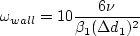

A turbulent flat plate study was conducted to explore the influence of
minimum normal grid spacing on the sensitivity of the CFD results for a variety of turbulence models.
This is different than a grid density study (found on many other pages
on this TMR site).
Instead, the question being asked here is:
what is the effect of the choice of placement of the first gridpoint off the wall?
Note that the grids used in this study were different from those used for the 2DZP test cases. The grids are not provided here,
but they are very easy to construct.
A single grid size was employed: 225 x 97. The grids each ran from x=-0.24 to x=2, with delta x spacing of 0.01 (no stretching in x).
The solid wall plate lay between x=0 and x=2.
In the wall-normal direction, the grids extended from y=0 to y approx = 1. The minimum normal spacing (and hence average minimum y+) was
varied along with the (constant) stretching factor, as described in the following table:
Grid size
|
Delta ymin at the wall
|
stretching factor
|
approx avg min y+
|
225 x 97 (finest)
|
0.5 x 10-6
|
1.13952
|
0.09
|
225 x 97
|
1 x 10-6
|
1.13054
|
0.19
|
225 x 97
|
2 x 10-6
|
1.12157
|
0.37
|
225 x 97
|
4 x 10-6
|
1.11262
|
0.74
|
225 x 97
|
8 x 10-6
|
1.10366
|
1.5
|
225 x 97
|
16 x 10-6
|
1.09470
|
2.9
|
225 x 97 (coarsest)
|
32 x 10-6
|
1.08570
|
5.9
|
The flow conditions were identical to that of the
VERIF/2DZP test case and
2DZP test case.
Conventional wisdom states that grids for turbulent flow RANS
(when integrating to the wall, i.e., without wall functions)
should be constructed so that the average minimum y+ is less than 1.
However, as can be seen from the first four plots above, the models that used an omega equation (SST/SST-V/SST-Vm, Wilcox2006-klim, and
SSG/LRR-RSM-w2012) all demonstrated higher sensitivity to average minimum
y+ than other models (SA or k-kL-MEAH2015).
These first four plots show (a) drag coefficient of the plate
and (b) skin friction coefficient at a specific location on the plate,
as a function of the average minimum y+ of the grid.
The SA and k-kL-MEAH2015 models exhibit less
sensitivity to the average minimum y+ of the grid, whereas
the omega-based models exhibit more sensitivity.
(Note that we do not expect all models to give the same results
as the average minimum y+ of the grid approaches zero; what we are looking for is the change in a given model.)
Therefore, the use of the omega equation and/or the omega wall boundary condition:
- 
apparently causes a greater dependency on the average minimum y+ for a given grid size.
For example, with the omega-based models,
use of a grid with average minimum y+ of 0.8 produced a drag coefficient between 2-3% low compared to use of a grid
with average minimum y+ of 0.1. This increased dependency should be recognized when using omega-based models.
For reference, the final two plots above show the behavior of nondimensional omega and eddy viscosity very near the wall on the
various grids, in this case for the SST/SST-V/SST-Vm model. The smaller the average
minimum y+ of the grid, the better the high gradient of the
near-wall omega is resolved.
These results are consistent with the results published in
Bardina, J. E., Huang, P. G., and Coakley, T. J., "Turbulence Modeling Validation, Testing, and Development,"
NASA TM 110446, April 1997.
https://ntrs.nasa.gov/citations/19970017828.
Return to: Axisymmetric Subsonic Jet Case Intro Page
Return to: Turbulence Modeling Resource Home Page
Recent significant updates:
06/27/2019 - added expanded y+ results (first two plots), and added links to the data that produced the plots
Privacy Act Statement
Accessibility Statement
Responsible NASA Official:
Ethan Vogel
Page Curator:
Clark Pederson
Last Updated: 11/18/2021